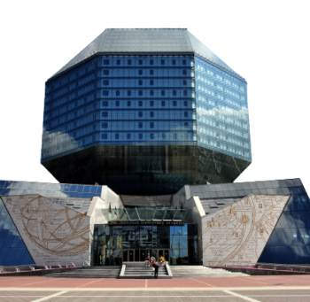

МІНСК У ТВОРАХ
Мінск. Цяперашні. Нечаканы. Любімы
Для масквічоў цалкам рэальная "нядобрая кватэрка" з рамана Міхаіла Булгакава, для лонданцаў — дом Шэрлака Холмса, для стакгольмцаў — дах, на якім жыў Карлсан, для веронцаў — грабніца Джульеты. Ёсць і ў беларускай сталіцы месцы, апісаныя ў вядомых творах.